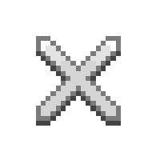

AboutMe.txt

 Hello I’m Keagan Rieder!
Hello I’m Keagan Rieder!
I’m a programmer and artist, currently attending the University
of Lethbridge for a BFA in New Media and a BSC in Computer Science.
I enjoy working with various programming languages and tools to
create software that solves problems or generates and makes interactive artwork. When I’m
not
writing programs to make or solve problems, I’m drawing pixel art pieces or tile sets and
character
models that can be used for games.
Programming is a hobby and passion of mine, which I’ve had since middle school.
I was introduced and
fell in love with the problem-solving aspects and the ability to create things with it. This
passion
led me to attend the University of Lethbridge to expand my programming skills. Well, there,
I
would
find
out about the new media program that covered various skills and topics, including video game
design
and
development. Having a hobby of playing video games and a desire to develop and create games,
I
added
new media as a second major.
Besides doing school, I’m currently working on a game called Automation, which combines
elements
from automation games and colony sims to create different experiences. The game’s developer
is
currently more of a hobby, a way to practice and learn new skills.
Skills
Languages
- Java
- C#
- C++
Engines
- Unity
- Godot
Tools
- Blender
- Aesprite
- Git & GitHub
- Visual Studio Code
- Processing
Artist Statement
I’ve always enjoyed creating digital works of art that are static images but rather
change
either on
their own or by the action of the viewer, often achieved by having some degree of
programming
part
of the work. The programming aspects of my work can range from accompanying pixel art
pieces
or
other digital artworks to a program utilizing procedural generation techniques to create
new
work
from something semi or fully random.
The ability to create something with meaning from something semi or purely random is one
of
many
things that inspire my work. Sense-creating works from randomness can allow for a piece
with
elements that can unpredictably change, creating an entirely different experience.
Especially
when
accompanied by adding interactivity through code, it can lead to the work being able to
change
based
on the viewer.
Overall, I strive to create pieces that combine digital art with the strengths code to
create
works
that can be interacted with and experienced in many ways.